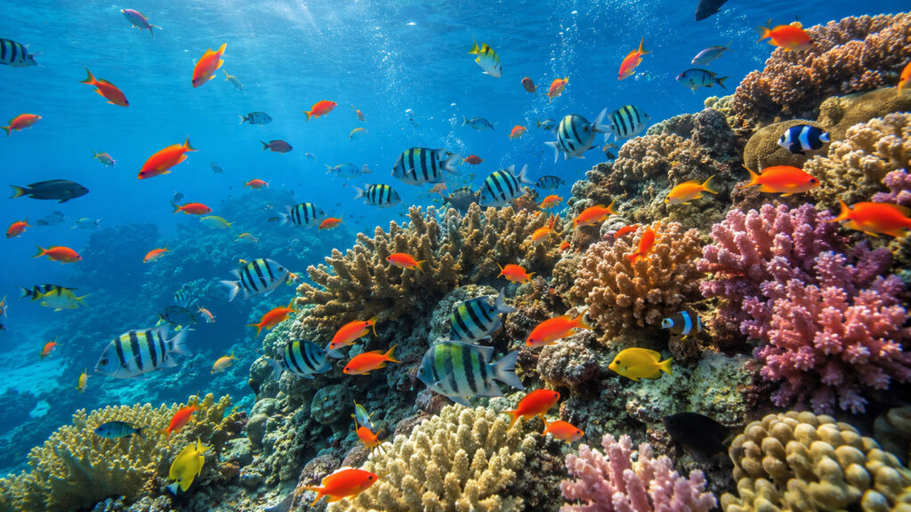

Conserve and sustainably use oceans, seas, and marine resources for a sustainable future.

Oceans cover most of our planet and support millions of marine species. They regulate climate, provide food, and produce oxygen that supports life.
of Earth's surface is covered by oceans.
people depend on healthy oceans for food and livelihoods.
marine species are affected by plastic pollution.
Plastic waste harms marine animals and damages ocean ecosystems.
Unsustainable fishing reduces marine populations and affects food chains.
Rising temperatures and ocean acidification threaten marine biodiversity.
Reduce plastic use, recycle responsibly, protect marine habitats, and support sustainable fishing practices.